Votre parcours fitness, magnifiquement visualisé
Transformez vos données Apple Watch et Santé en un voyage beau et perspicace. Suivez course, vélo, natation et tous vos entraînements. Analysez tendances, records et célébrez chaque victoire.
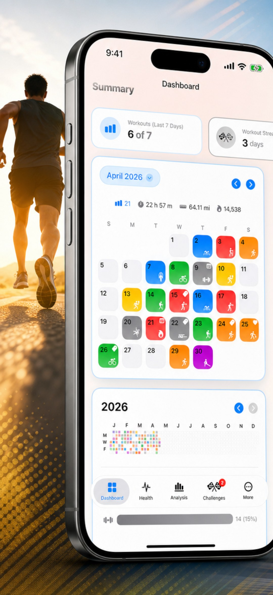
Fonctionnalités puissantes
Tout ce dont vous avez besoin pour comprendre et célébrer votre parcours fitness
Analyses professionnelles
Débloquez une suite d'analyse qui tient dans votre poche. Comparez vos entraînements côte à côte, visualisez les tendances annuelles et suivez la cadence et la longueur de foulée. Y compris des graphiques de référence en boîte à moustaches qui révèlent votre médiane, vos quartiles et vos valeurs aberrantes pour chaque sport.
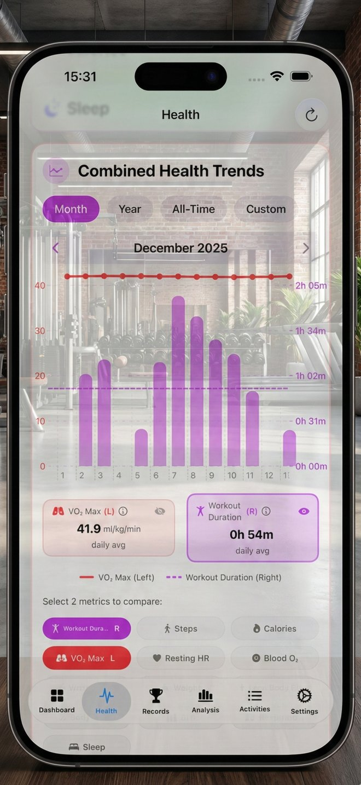
Tableau de bord interactif
Accédez à un tableau de bord entièrement interactif qui relie vos mouvements quotidiens à votre bien-être général. Suivez votre régularité avec des graphiques de contribution et des compteurs de séries.
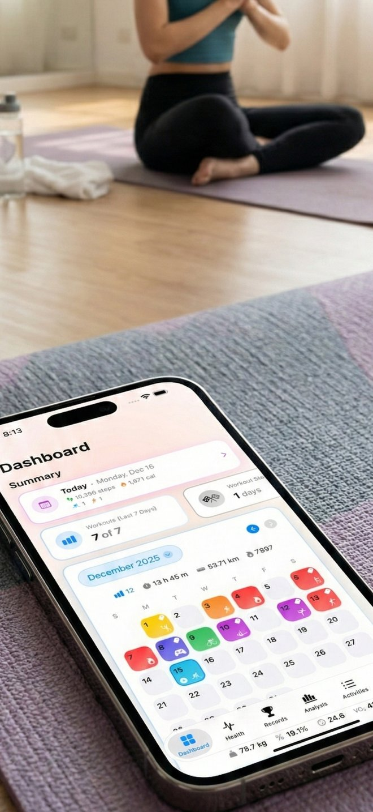
Chronologie
Vivez votre historique fitness comme un récit continu. Parcourez une chronologie visuelle riche qui entrelace vos activités avec vos souvenirs.
Mes lieux
Visualisez votre historique d'entraînement sur une carte, regroupé par ville et pays. Découvrez tous les endroits où votre parcours fitness vous a emmené dans le monde.
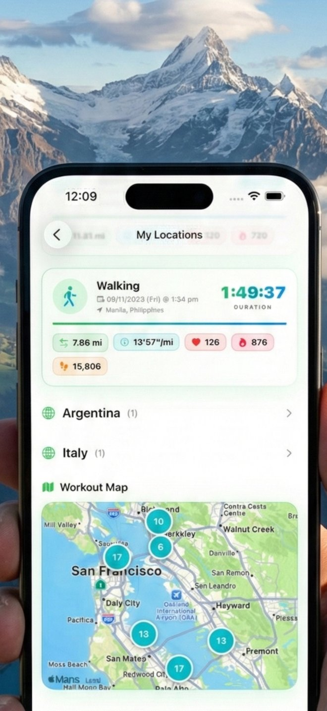
Favoris et tags
Organisez votre entraînement avec des tags personnalisés comme « Intervalles », « Récupération » ou « Jour de course ». Marquez vos meilleures séances d'un cœur pour créer une collection de performances exceptionnelles.
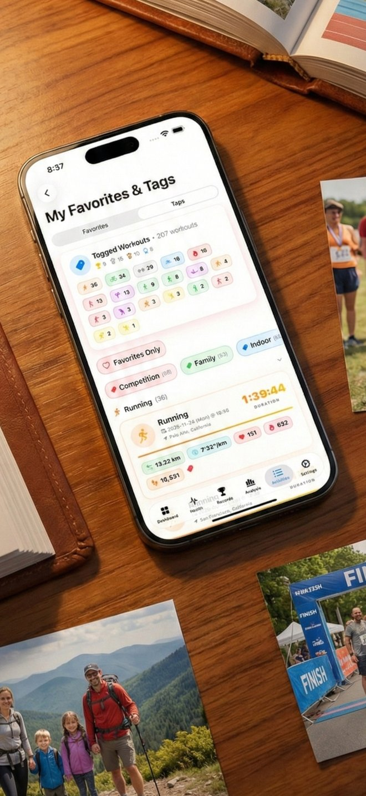
Records personnels
Nous détectons automatiquement les records personnels et les affichons avec vos photos et notes. Gardez vos victoires préférées au premier plan dans votre Vitrine des Trophées.
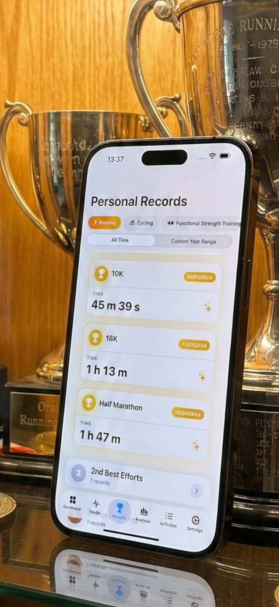
Comparaison d'entraînements
Comparez plusieurs entraînements côte à côte (jusqu'à 10) pour voir votre progression. Analysez l'allure, la fréquence cardiaque, l'altitude et plus encore pour comprendre l'évolution de vos performances.
Parcours Coloré
Visualisez vos parcours d'entraînement comme jamais auparavant. Colorez votre chemin par allure, dénivelé, cadence ou longueur de foulée pour voir instantanément où vous avez le plus poussé.
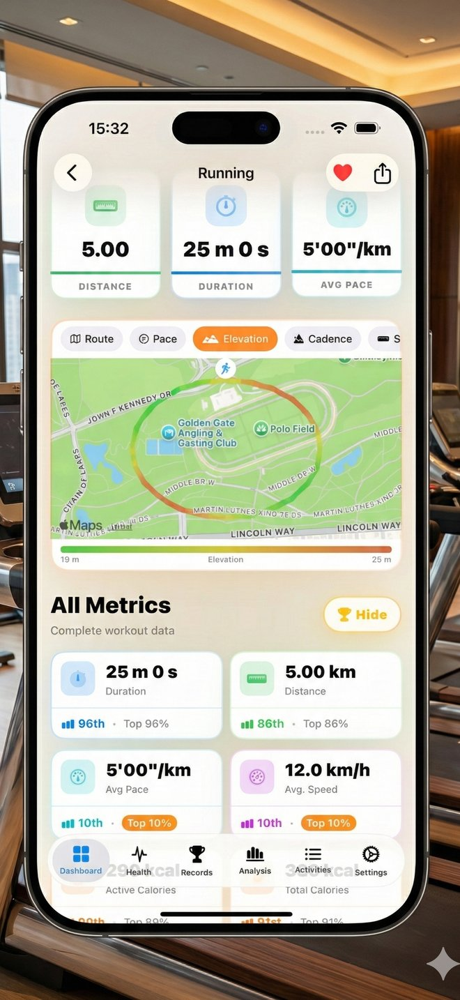
Célébrer les Records
Chaque record personnel mérite d'être reconnu. Lorsque vous battez un nouveau PR, célébrez ce moment avec de magnifiques visuels qui capturent votre réussite.
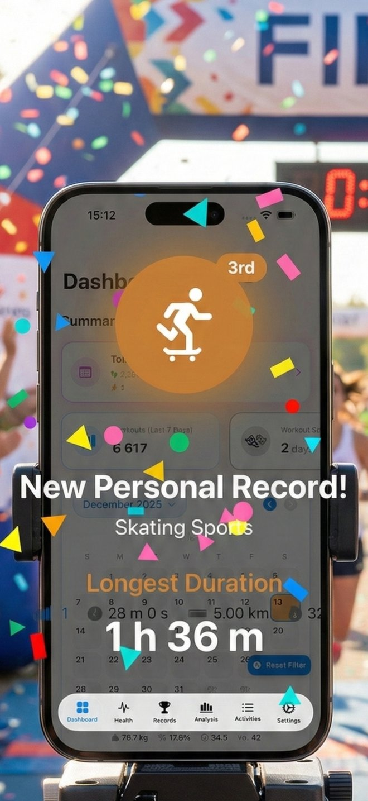
Widgets
Gardez vos données fitness au premier plan avec de magnifiques widgets. Suivez vos pas, calories, progression et métriques corporelles en un coup d'œil—sans ouvrir l'app.
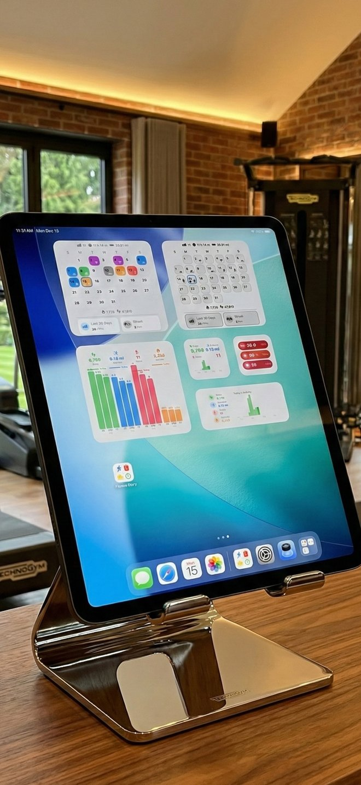
Métriques de Santé
Surveillez toutes vos métriques de santé essentielles—des pas et calories à la fréquence cardiaque, VO2 max, sommeil et plus—en un coup d'œil. Comparez vos tendances à vos références personnelles.
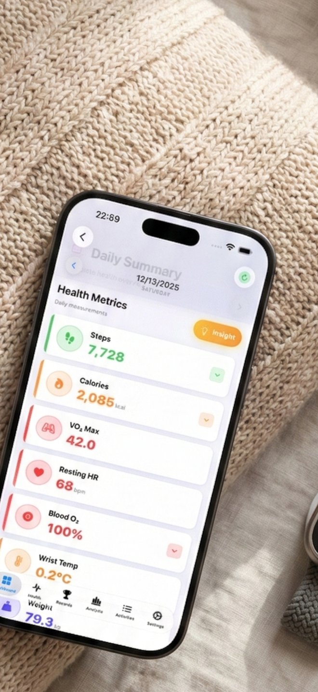
Défis quotidiens
Relevez des défis suivis automatiquement – course de 3 km, 10 000 pas, 10 km à vélo et séance de 45 minutes – sur des paliers de 1, 3 et 7 jours. Gagnez des badges, remplissez votre vitrine à trophées et célébrez chaque victoire.
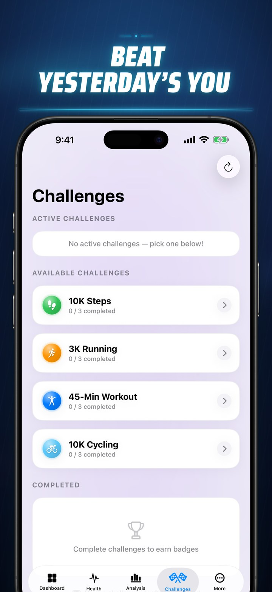
Cartes à partager
Transformez n'importe quelle séance, record ou défi en une superbe carte à partager. Choisissez parmi 15 thèmes de couleur et basculez entre les styles Dégradé et Clair selon vos envies.
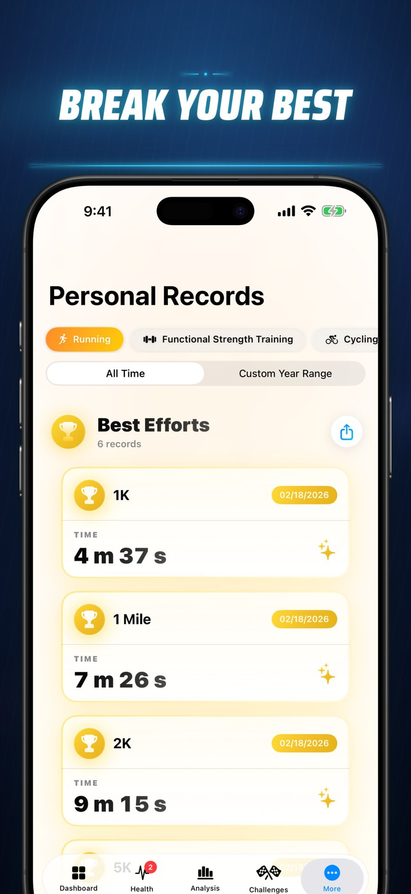
Tout exporter
Exportez tout votre historique – ou n'importe quelle période – au format CSV ou JSON, avec les données de fractionnement, les métriques corporelles et les métadonnées de séance. Vos données vous appartiennent toujours.
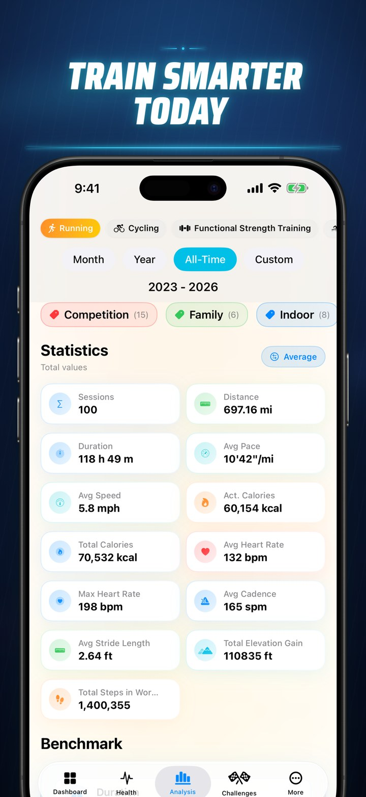
Découvrez l'application
Un design élégant allié à des fonctionnalités puissantes
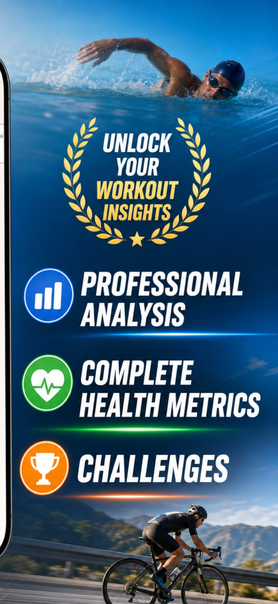
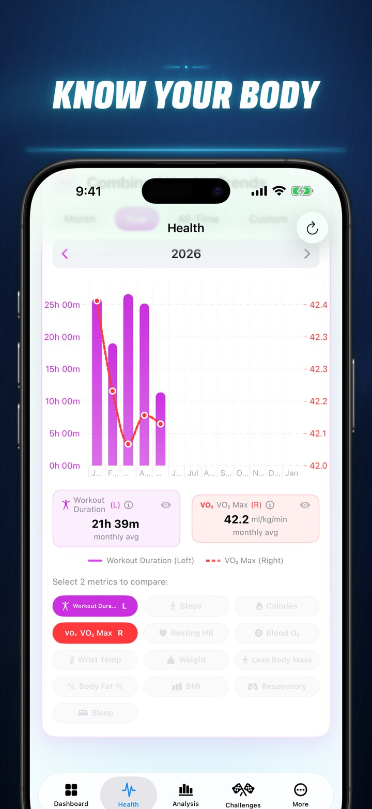
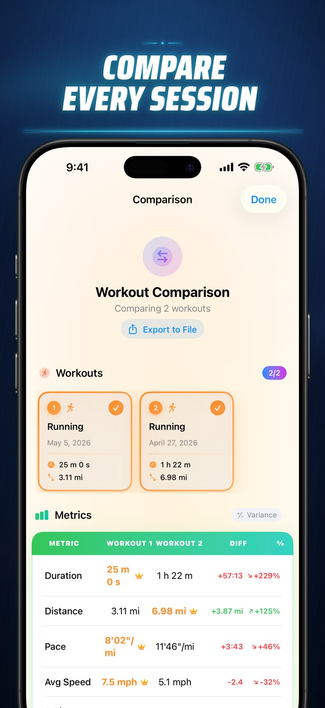
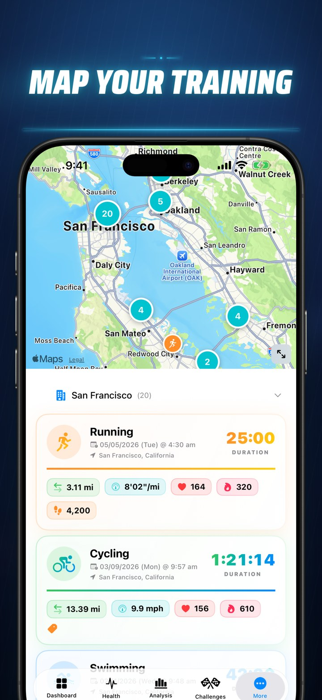
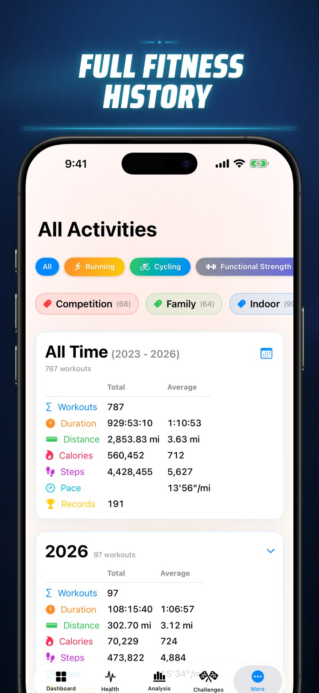
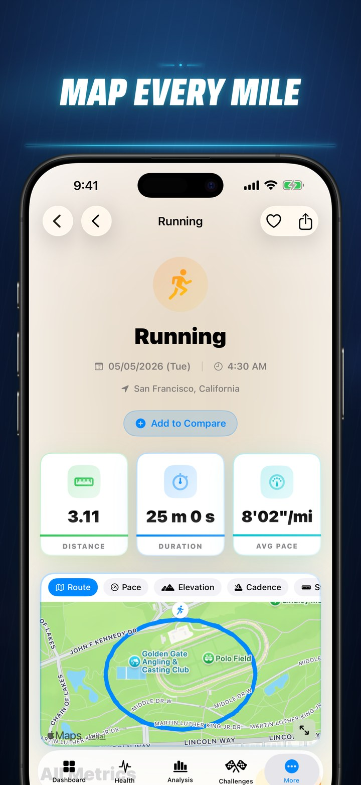
Ce que disent les utilisateurs
Rejoignez des milliers de passionnés de fitness qui adorent Fitness Story
"Cette application fournit des tendances fitness incroyables qu'Apple ne peut pas offrir autrement. La mise en page est magnifique avec un style Apple."
"Enfin une application fitness qui transforme les données brutes en visuels qui me motivent vraiment. J'adore le suivi des records personnels et la comparaison d'une année sur l'autre !"
"Cette application me donne des informations que ni Strava ni l'application Santé n'ont pu fournir. Si vous aimez le fitness, vous devez absolument l'essayer !"
Commencez votre Fitness Story aujourd'hui
Téléchargement gratuit avec mise à niveau Pro optionnelle pour les fonctionnalités avancées. Vos données restent privées sur votre appareil.
Questions fréquentes
Tout ce que vous devez savoir sur Histoire Fitness
Histoire Fitness ne suit pas directement les entraînements—votre Apple Watch et iPhone le font déjà parfaitement ! Vos appareils collectent en permanence les données d'entraînement et les métriques corporelles, stockant tout dans Apple Santé. Accordez simplement à l'application un accès en lecture seule, et nous transformerons toutes ces données en rapports magnifiques, analyses perspicaces et insights exploitables.
Toutes vos données personnelles—notes, photos, tags, évaluations et favoris—sont stockées en toute sécurité dans le stockage local de votre appareil et votre compte iCloud personnel. Vos données se synchronisent parfaitement sur tous vos appareils Apple. Même si vous supprimez l'application, vos données restent en sécurité dans iCloud et seront restaurées lors de la réinstallation.
Histoire Fitness présente une vue complète de vos données de santé : pas quotidiens, calories actives, VO2 max, zones de fréquence cardiaque, niveaux d'oxygène sanguin, température du poignet, poids, masse maigre, pourcentage de graisse corporelle, IMC, fréquence respiratoire et analyse détaillée du sommeil. Tout ce dont vous avez besoin pour comprendre les performances de votre corps.
Histoire Fitness prend en charge tous les types d'entraînement suivis par Apple Watch—plus de 80 activités ! Cela inclut les activités populaires comme la course, le vélo, la natation, le HIIT, le yoga et la musculation, ainsi que des activités spécialisées comme le pickleball, l'escalade, les arts martiaux, le ski, la danse et bien d'autres. Si votre Apple Watch peut le suivre, Histoire Fitness peut le visualiser.
Les défis sont des objectifs de remise en forme intégrés – une course de 3 km, 10 000 pas, une sortie de 10 km à vélo ou une séance de 45 minutes – suivis automatiquement à partir de vos données Apple Santé sur des paliers de 1, 3 et 7 jours. Relevez-les pour gagner des badges et constituer votre vitrine à trophées.
Oui. Exportez tout votre historique, ou n'importe quelle période personnalisée, au format CSV ou JSON – y compris les données complètes de fractionnement, les métriques corporelles et les métadonnées de séance. Vous pouvez aussi exporter une comparaison de séances pour l'analyser avec vos propres outils.
Fitness Story est gratuit à télécharger et à utiliser. Une mise à niveau Pro facultative débloque toute la profondeur de l'analyse, des défis et du partage – sans compte ni abonnement requis pour commencer.
Fitness Story fonctionne sur iPhone et iPad. Il lit vos données Apple Santé et Apple Watch en accès lecture seule – pas de compte ni de serveur, tout reste donc sur votre appareil et dans votre iCloud privé.
Votre vie privée compte
Fitness Story lit vos données directement depuis Apple Santé en mode lecture seule. Tous les calculs et analyses sont effectués en toute sécurité sur votre appareil. Vos données de santé ne sont jamais envoyées à nous ou à des tiers.
Lire notre politique de confidentialité